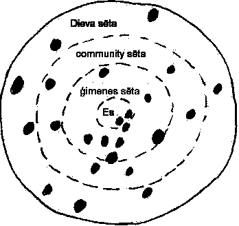

|
White Life ( Baltā Dzīve )
Your psyche as balta sēta [white fence]
Describes tools within psyche. Defines mental balance.
- Balta.
- Mental health is when all elements of your psyche are saderēta. Visually, it is defined as balta [white], which is a combination of all colours in the visual spectrum. Of course, this parallels everything within the dieva sēta as well. See chart. So balta is white light. Anything that shines or sparkles is also balta. Sudraba [silver], zelts [gold], leaves smeared with butter are all metaphors commonly used to explain the sparkling shine of balta [white].
- Black.
- Black is the esma not saderēta. We all have some black in ourselves, and so does the universe.

Your psyche is balta [white] when saderēta [balanced]
Melnum [black parts] where are not saderēta [balanced]
Same structure for universe: Some valsts [countries] are saderēta [balanced] within themselves and Dieva sēta [god’s fence], and some are not. Es [yourself] has to live with both.
The spectrum of 7 colours.
There is not strong emphasis on putting a colour to a trait. Instead, the traits are explained in natural order according to the process that we should approach our tasks of the day.
- Zeme. [earth] We have to start well physically grounded. Foundations have to be strong in order to build a structure.
- Miers. [calm] Only where is calm, can plant a seed. Then seed can grow and planter gets product.
- Klusums. [quiet] So can find our saulīte – the bright light shining inside us. It is often lost in noise and busy-ness. When spiritually healthy the „skaistākie” [beautiful implying white] will hold onto saulīte, knowing that no one can steal it.
- Savrūpība. [self-working] „Viensētnieks” [one-fence-er] works with own sēta. Appreciate and use what have within own sēta. Share, but not take, from others.
- Spīts. [Commitment. Willpower] Your courage to follow through on plan, even when faced with difficulties.
- Darbs. [work] Work ethic.
- Daiļums. [harmony and composition balance] The manager of the previous colours to create this harmony and balance. Your liktenis [free-will].
When all the colours combine in saderēta manner, we get balts.
Balts, Daiļums, Skaists, Skaidrs
- Skaists [beautiful].
- Lithuanian „skaistas” meaning Latvian „skaidrs” [clear]
- Skaidrs [clear].
- Something makes sense when it is clear, not foggy etc. A light shines the best when everything is clear. So too do we and everything around us.
- Balts [white].
- The colour of light from the sun.
- Daiļums. [harmony and balance]
- The ability to create this white light, which is skaidrs [clear], and therefore skaists [beautiful].
SSS2004 Home
|